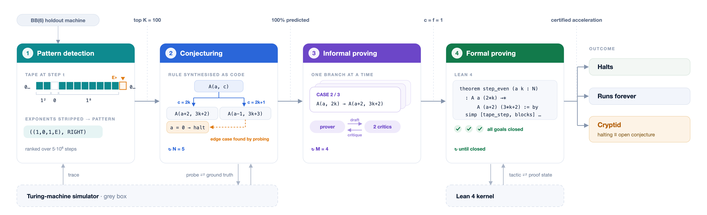

A Gemini agent formally verifies conjectured Turing-machine acceleration rules in Lean 4, building on the BusyLean repository's Turing machine definitions.
Abstract
Recent breakthroughs in AI for mathematics—ranging from Olympiad medal performances to resolving long-standing open conjectures—have rapidly expanded what automated systems can achieve. Yet these successes primarily concern predefined, human-formulated problems, leaving open how AI systems can autonomously uncover mathematical structure and formulate new questions. To push beyond static challenges, we explore the Busy Beaver (BB) domain, an uncomputable frontier that is fundamentally open-ended. Because no algorithm can compute the Busy Beaver number $\mathrm{BB}(n)$ for every $n$, this domain provides a natural setting for sustained exploration through mathematical conjecture and proof. In this paper, we introduce a Gemini-based agentic pipeline that automatically discovers accelerations of Turing machines, expressed as compact mathematical rules summarizing many execution steps. Our system integrates pattern recognition, automated conjecturing, informal mathematical reasoning, and formal theorem proving in Lean. With this framework, our system autonomously discovered and formally verified novel Collatz-like accelerations for eleven machines in $\mathrm{BB}(6)$. Subject to community acceptance, we provisionally classify these machines as Cryptids, namely machines whose blank-tape executions admit exact, compact mathematical descriptions but whose halting behavior remains unresolved. These results advance the analysis of $\mathrm{BB}(6)$ holdouts on the Busy Beaver frontier and demonstrate the potential of autonomous AI systems for open-ended mathematical discovery in fundamental computer science.
Problem
AI-for-math successes mostly target predefined, human-formulated problems. The Busy Beaver frontier, where BB(n) is uncomputable, offers an open-ended setting for AI to discover structure in unresolved BB(6) holdout machines.
Approach
A four-stage Gemini 3.1 Pro pipeline runs on each machine. It simulates the machine and compresses tape configurations to detect frequent patterns. An LLM then conjectures and refines parametrized transition rules, and a generator-evaluator loop produces informal proofs. An agent finally autoformalizes the rules and proves them in Lean 4, using extended definitions from the BusyLean repository.

Figure 1 : Overview of the automated discovery pipeline, detailing the progression from empirical pattern detection and LLM-guided rule conjecturing to informal proving and formal verification in Lean 4.
Results
The system discovered and formally verified Collatz-like accelerations for eleven BB(6) machines, which are provisionally classified as Cryptids. It also verified accelerations in the BB(2,5) domain and formally proved rules for some previously analyzed machines.